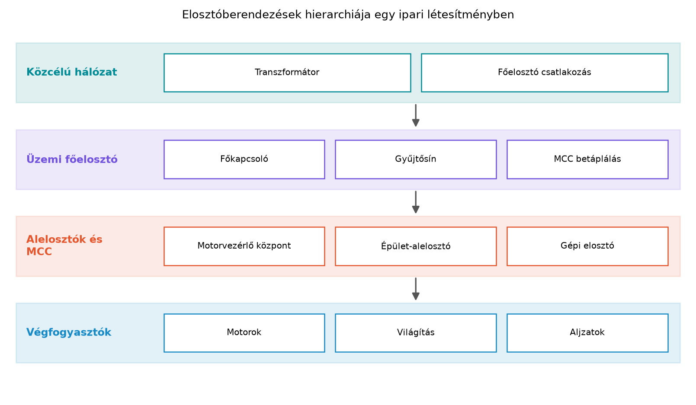
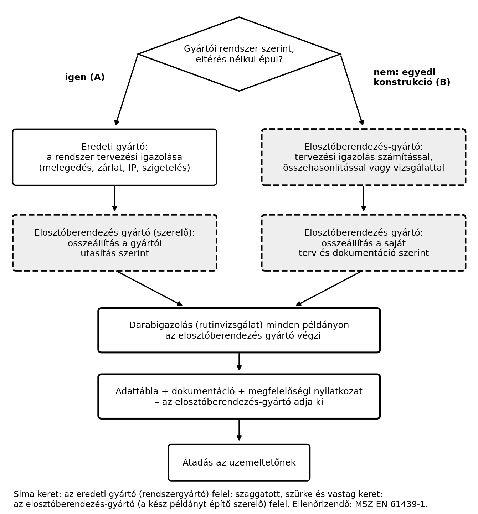

Amikor egy villanyszerelő lakáselosztót cserél, vagy egy műhelyben új motorvezérlő szekrényt szerel, ritkán gondol arra, hogy az általa összeállított doboz jogi és szabványügyi szempontból elosztóberendezés. Mégis ezen múlik, hogy az elkészült szerkezetet át lehet-e adni, milyen dokumentumokat kell mellékelni, és ki felel akkor, ha később zárlat vagy érintésvédelmi hiba miatt baleset történik. A gyakorlatban gyakori félreértés, hogy „a kismegszakító típusvizsgált, tehát az elosztó is megfelelő”. Ez nem igaz: az elosztóberendezés önálló termék, amelyre külön szabványsorozat vonatkozik, és amelynek megfelelőségét a gyártónak kell igazolnia. Ebből a fejezetből megtanulod, mi a különbség a gyártói rendszerből épített és az egyedi konstrukciójú elosztó között (a régi „típusvizsgált” fogalom helyett tervezési igazolás), ki számít gyártónak, mi a darabigazolás (rutinvizsgálat) szerepe, és milyen jelölésekkel, dokumentumokkal kell egy elosztót átadni.
Az alábbi vázlat egy ipari létesítmény elosztási hierarchiáját mutatja. A hálózati betáplálástól a végfogyasztókig minden szinten elosztóberendezés található, csak más-más feladattal, árammal és zárlati szilárdsággal.

A felső szinten a főelosztó fogadja a közcélú hálózat vagy a helyi transzformátor betáplálását. Itt nagy a névleges áram és a zárlati áram. Az alatta lévő alelosztók és motorvezérlő központok (MCC) már kisebb területet látnak el, de sok védelmi és vezérlési funkciót tartalmaznak. A legalján a végfogyasztók – motorok, világítási áramkörök, aljzatok – közvetlen kapcsolatai vannak. Egy villanyszerelő jellemzően az alelosztókat, gépelosztókat, lakáselosztókat vagy az MCC-k egyes fiókjait szereli, ezért ezekkel a fogalmakkal találkozik nap mint nap.
Definíció. Elosztóberendezés (kapcsoló- és vezérlőberendezés). Az elosztóberendezés olyan, a gyártó által összeállított villamos szerkezet, amely egy vagy több kapcsoló-, védő-, vezérlő-, mérő- vagy jelzőkészüléket tartalmaz, és amelyet villamos energia elosztására, kapcsolására, vezérlésére vagy védelmére terveztek. A pontos meghatározást az MSZ EN 61439-1 aktuális kiadása adja meg.
Példa. Egy lakáselosztó, amely tartalmaz egy főkapcsolót, néhány kismegszakítót, egy áram-védőkapcsolót és sorkapcsokat, elosztóberendezésnek minősül. Ugyanígy egy motorvezérlő szekrény, amely mágneskapcsolót, hőkioldót, motorvédő kapcsolót és nyomógombos vezérlést tartalmaz.
Definíció. Gyártó (elosztóberendezés-gyártó). Az a természetes vagy jogi személy, aki az elosztóberendezést forgalomba hozza, vagy aki a tervezésért és a legyártásért felelős. A villanyszerelő, aki egyedi elosztót épít, a szabvány értelmében elosztóberendezés-gyártónak minősül. Ennek jogi következményei vannak: neki kell gondoskodnia a tervezési igazolásról (egyedi konstrukciónál), a darabigazolásról (rutinvizsgálatról), a jelölésről és a megfelelőségi nyilatkozatról. A pontos felelősségi szabályokat a hatályos magyar műszaki biztonsági előírások és a szabvány aktuális kiadása tartalmazzák. (ellenőrizendő: a felelősségi kör jogi megfogalmazása)
Definíció. Eredeti gyártó (original manufacturer). Az a szervezet, amely az elosztóberendezés-rendszert (kapcsolóberendezés-családot) kifejlesztette, és a tervezési igazolást elvégezte. Az eredeti gyártó és az elosztóberendezés-gyártó lehet ugyanaz a szervezet, de lehet két különböző is. (ellenőrizendő: az MSZ EN 61439-1 hatályos magyar terminológiája)
Definíció. Tervezési igazolás (design verification). Annak igazolása, hogy a konstrukció megfelel a szabvány követelményeinek (melegedés, zárlati szilárdság, szigetelés, védettség, mechanikai tulajdonságok stb.). Három módszer létezik: vizsgálat, számítás vagy összehasonlítás már igazolt referenciakonstrukcióval, valamint tervezési szabályok alkalmazása; hogy melyik módszer melyik követelményre engedett, azt a szabvány adja meg. A tervezési igazolás a konstrukcióra vonatkozik, nem minden legyártott példányra.
Definíció. Darabigazolás (rutinigazolás, routine verification). Minden egyes legyártott elosztóberendezésen elvégzendő igazolás, amely az adott példány gyártási vagy szerelési hibáit tárja fel. Jellemző elemei a szemrevételezés, a védővezető-folytonosság ellenőrzése, a szigetelési ellenállás mérése és a működési próbák. A konkrét lépéseket a szabvány aktuális kiadása és a gyártói dokumentáció határozza meg. (ellenőrizendő: a darabigazolás pontos listája)
Definíció. Gyártói rendszerből, a gyártói utasítás szerint épített elosztóberendezés. Olyan elosztó, amelynek konstrukcióját az eredeti gyártó már igazolta, és az elosztóberendezés-gyártó (pl. a szerelő) a gyártói utasításnak megfelelően, eltérés nélkül, a rendszer jóváhagyott elemeiből építi. Ilyen lehet például egy moduláris lakáselosztó-család vagy egy MCC-rendszer.
Definíció. Egyedi konstrukciójú elosztóberendezés. Olyan elosztó, amelyet egy adott projekthez, konkrét kapcsolási rajz és elrendezési terv alapján, a gyártói rendszer utasításaitól eltérően, vagy rendszer nélkül építenek, jellemzően egyszeri példányban. Ebben az esetben a tervezési igazolást az elosztóberendezés-gyártónak kell elvégeznie erre az egyedi konstrukcióra. Az „egyedi” kifejezés nem azt jelenti, hogy az elosztóra nem vonatkoznak követelmények, hanem csak azt, hogy nem sorozatgyártásról van szó.
Régi terveken. A korábbi MSZ EN 60439 a „típusvizsgált (TTA)” és a „részlegesen típusvizsgált (PTTA)” fogalmat használta; ezeket az MSZ EN 61439 a tervezési igazolással váltotta fel (az MSZ EN 60439 jelölést lecserélték). Ma „típusvizsgált” minősítés önmagában nem igazolja a megfelelőséget. (ellenőrizendő: az MSZ EN 61439-1 hatályos magyar terminológiája)
Szabvány. MSZ EN 61439 sorozat. A kisfeszültségű kapcsoló- és vezérlőberendezések fő szabványa az MSZ EN 61439 sorozat. Az általános rész (MSZ EN 61439-1) tartalmazza a fogalmakat, az igazolási módszereket, a vizsgálatokat és a dokumentációs követelményeket. Az egyes alkalmazási részek az ipari kapcsolóberendezésekre (MSZ EN 61439-2), az épületelosztókra (MSZ EN 61439-3) és más speciális elosztótípusokra vonatkoznak. A pontos követelményeket, határértékeket és vizsgálati módszereket mindig az aktuális kiadásból, valamint a nemzeti kiegészítésekből kell ellenőrizni.
A legfontosabb gyakorlati különbség a felelősség és az igazolás módja.

Ábraolvasás. Az ábra a döntési kérdéssel indul: gyártói rendszerből, a gyártói utasítástól eltérés nélkül épül-e az elosztó. Ha igen (A ág), a konstrukció tervezési igazolását (melegedés, zárlati szilárdság, IP, szigetelés) az eredeti gyártó már elvégezte; ha nem (B ág, egyedi konstrukció), ezt az elosztóberendezés-gyártónak – sokszor magának a szerelőnek – kell elvégeznie számítással, összehasonlítással vagy vizsgálattal. A darabigazolás (rutinvizsgálat) minden példányon, valamint az adattábla, a dokumentáció és a megfelelőségi nyilatkozat mindkét ágon az elosztóberendezés-gyártó feladata.
A gyártói rendszerből épített elosztó esetén az eredeti gyártó egy adott elosztócsaládra – például egy moduláris falon belüli elosztóra vagy egy MCC fiókos rendszerre – elvégezte a tervezési igazolást. Ez magában foglalja például a melegedési vizsgálatot, a zárlati szilárdság igazolását, a védettség (IP) ellenőrzését és a mechanikai vizsgálatokat. A szerelő, aki ezt a rendszert a gyártói előírások szerint, jóváhagyott elemekből építi, felhasználhatja az eredeti gyártó igazolásait, de a darabigazolást és a példányra vonatkozó megfelelőségi nyilatkozatot elosztóberendezés-gyártóként akkor is neki kell elkészítenie. (ellenőrizendő: a gyártói rendszerből épített elosztó feltételei, MSZ EN 61439-1)
Az egyedi konstrukciójú elosztó esetén nincs mögötte rendszerszintű igazolás. Ilyenkor az elosztóberendezés-gyártó – sokszor maga a villanyszerelő – felelős azért, hogy a tervezési igazolást elvégezze. Ez nem mindig igényel drága laborvizsgálatot: a szabvány lehetőséget ad arra, hogy bizonyos követelményeket számítással, összehasonlítással vagy a gyártói adatlapokból származó igazolásokkal ellenőrizzenek. Például a zárlati szilárdságot egy adott sínrendszerre a sín gyártójának adatlapja is igazolhatja, ha a szerelés megfelel az ott leírt feltételeknek. (ellenőrizendő: a tervezésellenőrzési módszerek alkalmazási feltételei)
Példa. Gyártói rendszerből épített lakáselosztó. Egy gyártó kínál egy falon belüli elosztót, amelyben a kismegszakítók fésűsinre csatlakoznak, a szerelőlemez előre kialakított, és a PE-sín rögzítése is gyártói elem. Az eredeti gyártó dokumentációja tartalmazza a tervezési igazolás jegyzőkönyveit, az névleges áramot, az zárlati szilárdságot és az IP védettséget. A szerelő ebből az elemkészletből épít elosztót, elvégzi a darabigazolást, és az elosztóberendezés-gyártóként a saját nevében kiadja a megfelelőségi nyilatkozatot, majd átadja a vevőnek. A felelősség megoszlik: a konstrukció igazolásáért az eredeti gyártó, a konkrét példány megfelelőségéért, darabigazolásáért és dokumentációjáért az elosztóberendezés-gyártó (itt a szerelő) felel. (ellenőrizendő: a felelősségmegosztás jogi részletei)
Példa. Egyedi konstrukciójú motorvezérlő szekrény. Egy gépész műhelyben a szerelő egyedi motorvezérlő szekrényt épít: a kapcsolási rajz alapján beépít egy főkapcsolót, olvadóbiztosítókat, mágneskapcsolót, hőkioldót, sorkapcsokat és egy PLC-t. Itt nincs kész gyártói rendszerigazolás az egész szekrényre, ezért a szerelőnek mint elosztóberendezés-gyártónak kell igazolnia például a melegedést, a zárlati szilárdságot, a védettséget és a vezetékezést. A gyakorlatban ez úgy történik, hogy a felhasznált készülékek gyártói adatait, a szekrény mechanikai adatait és a szerelési módot összehasonlítja a szabvány követelményeivel, majd az elvégzett rutinvizsgálatokat jegyzőkönyvben rögzíti. Ha ezt elmulasztja, az elosztó nem tekinthető szabványosnak.
Az elosztóberendezéseket a gyakorlatban a feladatuk és a beépített készülékek jellege szerint csoportosítjuk.
Ezek a típusok nem merev kategóriák: egy gépelosztó lehet egyszerre alelosztó és motorvezérlő egység is. A lényeg az, hogy a feladat és a zárlati igénybevétel határozza meg a szerkezetet és a szükséges vizsgálatokat.
Dokumentáció. Az elosztóberendezéshez a gyártónak legalább az alábbi dokumentumokat kell tudnia átadni:
A rajzokon a készülékek referenciajelöléseit (Q1, F1, K1, X1 stb.) kell használni, összhangban a Villamosipari dokumentáció II – gépek és készülékek részben tanultakkal. A kapcsolási rajz és az egyvonalas rajz közötti különbséget az Alaprajzok, fővezetéki terv és egyvonalas rajz alfejezet tárgyalja.
Jelölés. Minden elosztóberendezésen, jól látható helyen, adattáblát kell elhelyezni. Az adattáblán legalább a gyártó nevének vagy védjegyének, a típusjelnek, a gyártási idő azonosítójának és a vonatkozó MSZ EN 61439-X résznek szerepelnie kell; a további, jellemző adatok (az adattáblán vagy a műszaki dokumentációban):
A pontos adatkör a szabvány aktuális kiadásában és a jogszabályi előírásokban szerepel. (ellenőrizendő: az adattábla kötelező tartalma)
Továbbvitt eredmény. Az itt megismert elosztóberendezés-fogalom, a gyártói rendszerből épített / egyedi konstrukciójú elosztó megkülönböztetése (tervezési igazolás, darabigazolás), az IP/IK besorolás és a feliratozási követelmény közvetlenül szükséges a Felépítés: szekrény, sínek, szerelőlemez, hűtés és fűtés alfejezetben, ahol a fizikai kialakítás és a hőháztartás kérdéseit tárgyaljuk.
Egy villanyszerelő egy kis üzemben egyedi gépelosztót épített egy frekvenciaváltóhoz és egy motorhoz. A kapcsolási rajzot saját maga rajzolta meg, a készülékeket megbízható gyártóktól vette, a szerelést gondosan elvégezte, majd a szekrényt felszerelte és bekötötte. A próbaüzem sikeres volt, a motor elindult. Az elosztóra azonban nem került adattábla, és rutinvizsgálati jegyzőkönyv sem készült. Később a létesítmény szabványossági felülvizsgálatán a felülvizsgáló hiányosságként jelezte, hogy nem lehet egyértelműen azonosítani a gyártót, a névleges adatokat és a zárlati szilárdságot. A megrendelő nem tudta igazolni, hogy az elosztó megfelel a hatályos előírásoknak, ezért a berendezést pótlólagos dokumentációval, adattáblával és mérésekkel kellett utólag ellenőrizni. A tanulság: az elosztó nem akkor kész, amikor a motor elindul, hanem amikor a dokumentáció és a jelölés is rendelkezésre áll.
Biztonsági korlát. A példában szereplő munka 230/400 V hálózati feszültségen csak jogosult, arra képesített személy végezheti, a hatályos előírások szerint. Tanműhelyi gyakorlat esetén az oktató felügyelete kötelező.
Hiba 1. „A kismegszakító típusvizsgált, tehát az elosztó is
megfelelő.”
A kismegszakító valóban típusvizsgált készülék, de az elosztóberendezés
a maga egészében új termék. A melegedés, a zárlati szilárdság, a
védettség és a mechanikai kialakítás a beépítéstől függ, ezért az
elosztóra külön tervezési igazolás és darabigazolás szükséges.
Hiba 2. „Én csak összeraktam, a tervező
felel.”
A szabvány szerint aki az elosztót fizikailag legyártja, összeállítja és
forgalomba hozza, az elosztóberendezés-gyártónak minősül. A tervező
rajza fontos, de a gyártói felelősség – a rutinvizsgálat, a jelölés, a
megfelelőségi nyilatkozat – az elosztó készítőjénél van.
Hiba 3. Nincs adattábla, csak a kismegszakítók
feliratai.
A kismegszakítók feliratai az egyes áramköröket azonosítják, de az
elosztó egészének adatait nem. Az adattábla hiánya megnehezíti a
felülvizsgálatot, a karbantartást és a baleseti rekonstrukciót.
Hiba 4. A rutinvizsgálatot kihagyják, mert „úgyis
működik”.
A rutinvizsgálat nem a működést, hanem a gyártási és szerelési hibákat
keresi. Egy rosszul meghúzott kapocs vagy egy sérült szigetelés a
próbaüzemben még nem mindig okoz hibát, de később tüzet vagy áramütést
okozhat.
1. Igaz vagy hamis? Ha egy elosztó kismegszakítója
rendelkezik típusvizsgálati tanúsítvánnyal, akkor az elosztóberendezés
is automatikusan megfelelőnek tekinthető.
2. Ki minősül elosztóberendezés-gyártónak egy egyedileg, a
helyszínen összeszerelt elosztó esetén?
3. Mi a különbség a tervezési igazolás és a darabigazolás
között?
4. Sorolj fel legalább négy adatot, amelyet egy elosztó
adattábláján fel kell tüntetni.
5. Mit jelent a
felirat egy elosztóberendezés adattábláján, és milyen más zárlati
adatokat kell még figyelembe venni?
1. feladat (A)
Fogalmazd meg saját szavaiddal, mi az elosztóberendezés, és adj két
példát a gyakorlatból.
2. feladat (A)
Sorold fel a gyártói rendszerből épített és az egyedi konstrukciójú
elosztóberendezés legalább három lényeges különbségét.
3. feladat (B)
Egy elosztó adattábláján ezeket az adatokat látod:
,
,
,
IP54. Magyarázd el mindegyik jelentését, és mondd meg, miért fontos az
elosztó telepítésekor.
4. feladat (B)
Egyedi gépi elosztót kell építened. Sorold fel, milyen dokumentumokat
kell átadnod a megrendelőnek, és milyen vizsgálatokat kell elvégezned,
mielőtt az elosztó feszültség alá kerül.
5. feladat (C)
A megrendelő „típusvizsgált” elosztót kér. Mit jelent ez ma, és hogyan
igazolod a megfelelőséget, ha a villanyszerelő egyedi kapcsolási rajz
alapján szeretné megépíteni?
6. feladat (D)
Egy szabványossági felülvizsgálat során az egyik elosztón nincs
adattábla, a készülékfeliratok viszont megvannak. A felülvizsgáló
hiányosságot állapít meg. Miért nem elegendő a készülékek felirata?
Milyen intézkedést kell tenni a hiányosság megszüntetésére?
Önellenőrzés – válaszok
1. Hamis. Az elosztóberendezés önálló termék, amelynek tervezési igazolását külön kell biztosítani (vizsgálattal, számítással/összehasonlítással vagy tervezési szabályokkal), és minden példányon darabigazolás kell.
2. Az a természetes vagy jogi személy, aki az elosztót összeállítja, forgalomba hozza, vagy aki a tervezésért és a legyártásáért felelős. A gyakorlatban ez gyakran maga a villanyszerelő.
3. A tervezési igazolás a konstrukcióra vonatkozik (vizsgálattal, számítással/összehasonlítással vagy tervezési szabályokkal). A darabigazolás (rutinigazolás) minden egyes legyártott példányon történik, és a gyártási, szerelési hibákat keresi.
4. Például: gyártó neve vagy védjegye, típusjel, gyártási szám, névleges feszültség , névleges áram , zárlati szilárdság , IP-védettség, a vonatkozó szabvány jelölése.
5. Az a gyűjtősínrendszer névleges rövid idejű áramtűrése (effektív érték, adott ideig): 25 kA, 1 másodpercig. Mellette az adattábla/dokumentáció megadja a névleges csúcsáramtűrést (), zárlatvédő készülékkel védett berendezésnél pedig a névleges feltételes zárlati áramot (). A telepítési pont várható zárlati áramát és a zárlat időtartamát () kell összevetni ezekkel (ellenőrizendő: MSZ EN 61439-1).
1. feladat (A) megoldása
Az elosztóberendezés olyan összeállított villamos szerkezet, amely
kapcsoló-, védő-, vezérlő-, mérő- vagy jelzőkészülékeket tartalmaz, és a
villamos energia elosztására, kapcsolására, vezérlésére vagy védelmére
szolgál. Példa: lakáselosztó kismegszakítókkal és áram-védőkapcsolóval;
ipari motorvezérlő szekrény mágneskapcsolóval és hőkioldóval.
2. feladat (A) megoldása
Különbségek: (1) A gyártói rendszerből épített elosztó a gyártói
utasítás szerint, eltérés nélkül épül, az egyedi konstrukciójú egy
konkrét projekthez készül. (2) Az előbbinél a tervezési igazolást az
eredeti gyártó elvégezte, az utóbbinál az elosztóberendezés-gyártónak (a
szerelőnek) kell elvégeznie vagy igazolnia. (3) A gyártói rendszer
dokumentációja sok igazolást tartalmaz, az egyedinél ezeket össze kell
gyűjteni. A végső rutinvizsgálat mindkét esetben kötelező.
3. feladat (B) megoldása
-
:
az elosztó névleges feszültsége, tehát 230/400 V-os háromfázisú
hálózaton használható.
-
:
az elosztó névleges árama, amellyel folyamatosan terhelhető a megadott
környezeti feltételek mellett.
-
:
a zárlati szilárdság, az elosztó 1 másodpercig 25 kA zárlati áramot
visel el. Ez a gyűjtősínrendszer effektív értékű, adott idejű
áramtűrése; mellette a névleges csúcsáramtűrést
()
és zárlatvédő készülékkel védett berendezésnél a feltételes zárlati
áramot
()
is figyelembe kell venni, és a telepítési pont várható zárlati áramát és
a zárlat időtartamát ezekkel kell összevetni (ellenőrizendő: MSZ EN
61439-1).
- IP54: por ellen védett, és fröccsenő víz ellen védett. Ez a besorolás
határozza meg, hogy az elosztó milyen környezetbe (pl. poros műhelybe)
telepíthető. Az értékek ellenőrzését a gyártói dokumentáció és a
szabvány aktuális kiadása alapján kell végezni.
4. feladat (B) megoldása
Dokumentumok: kapcsolási rajz, elrendezési rajz, alkatrészjegyzék,
gyártói megfelelőségi nyilatkozatok a beépített készülékekre, tervezési
igazolások, darabigazolási (rutinvizsgálati) jegyzőkönyv, kezelési,
telepítési és karbantartási utasítás, EU-megfelelőségi nyilatkozat és
CE-jelölés (ellenőrizendő: 2014/35/EU, 2014/30/EU, MSZ EN 61439-1).
Vizsgálatok: szemrevételezés, védővezető-folytonosság, szigetelési
ellenállás, működési próbák, esetleg a védőberendezések kioldási
ellenőrzése. A pontos vizsgálati listát az MSZ EN 61439-1 aktuális
kiadása rögzíti.
5. feladat (C) megoldása
A „típusvizsgált” az MSZ EN 60439 (TTA/PTTA) fogalma volt, amelyet az
MSZ EN 61439 a tervezési igazolással váltott fel. Ma a helyes eljárás:
ha az elosztó gyártói rendszerből, a gyártói utasítás szerint, eltérés
nélkül épül, az eredeti gyártó tervezési igazolására támaszkodhatsz. Ha
a kapcsolási rajz egyedi, vagy eltér a gyártói utasítástól, a tervezési
igazolást (vizsgálattal, számítással/összehasonlítással vagy tervezési
szabályokkal) neked mint elosztóberendezés-gyártónak kell elvégezned.
Mindkét esetben a darabigazolás (rutinvizsgálat) minden példányon,
valamint az adattábla, a dokumentáció és a megfelelőségi nyilatkozat a
te felelősséged. (Ellenőrizendő: MSZ EN 61439-1 hatályos terminológiája
és a megrendelő szerződéses elvárása.)
6. feladat (D) megoldása
A készülékfeliratok csak az egyes kismegszakítók vagy relék adatait
mutatják, de nem azonosítják az elosztó gyártóját, típusát, névleges
áramát, zárlati szilárdságát és védettségét. Az adattábla hiánya miatt
nem lehet megállapítani, hogy az elosztó alkalmas-e az adott telepítési
helyre, és nem lehet nyomon követni a gyártói felelősséget. A hiányosság
megszüntetése: utólag el kell helyezni egy adattáblát a gyártó
adataival, a típusjellel, a gyártási idő azonosítójával és az MSZ EN
61439-X jelöléssel, a névleges adatokat
(,
,
,
IP/IK) pedig az adattáblán vagy a dokumentációban kell rögzíteni;
emellett pótolni kell a tervezési igazolásokat és a darabigazolási
(rutinvizsgálati) jegyzőkönyvet.
Az elosztóberendezés önálló termék, amelyre az MSZ EN 61439 szabványsorozat vonatkozik. Az elosztóberendezés-gyártó – gyakran maga a villanyszerelő – felelős azért, hogy a darabigazolás, a jelölés és a megfelelőségi dokumentáció elkészüljön. A gyártói rendszerből, utasítás szerint épített elosztónál az eredeti gyártó tervezési igazolására lehet támaszkodni, az egyedi konstrukciónál a tervezési igazolást az elosztóberendezés-gyártónak kell elvégeznie (a régi „típusvizsgált” fogalmat az MSZ EN 61439 lecserélte). A darabigazolást (rutinvizsgálatot) minden egyes legyártott példányon el kell végezni. Az elosztókat feladatuk szerint főelosztóra, alelosztóra, motorvezérlő központra (MCC), ipari kapcsolóberendezésre és épületelosztóra osztjuk. Az adattáblán legalább a gyártó nevét/védjegyét, a típusjelet, a gyártási idő azonosítóját és a vonatkozó MSZ EN 61439-X részt kell feltüntetni; a névleges adatok (, , , IP/IK) az adattáblán vagy a műszaki dokumentációban szerepelnek (ellenőrizendő: MSZ EN 61439-1 a jelölésről). Továbbvitt eredmény: ezek a fogalmak és követelmények alapozzák meg a Felépítés: szekrény, sínek, szerelőlemez, hűtés és fűtés alfejezetben tárgyalt fizikai kialakítást, védettséget és hőháztartást.
A fejezet a magyarországi és európai szabványrendszer, elsősorban az MSZ EN 61439 sorozat fogalomrendszerét használja. A pontos szabványszakaszok, a tervezési igazolási és darabigazolási módszerek, az adattábla kötelező adattartalma, valamint a gyártói felelősség jogi részletei a kiadás előtt ellenőrizendők az aktuális szabványkiadások és a hatályos magyar jogszabályok alapján. A szabványok tartalmát a Magyar Szabványügyi Testület által kiadott hatályos kiadásból, a szekrényrendszerek tervezési igazolását a rendszergyártó dokumentációjából kell ellenőrizni. A megadott példaértékek és értelmezések oktatási célúak, nem helyettesítik a gyártói dokumentációt és a hatósági előírásokat.